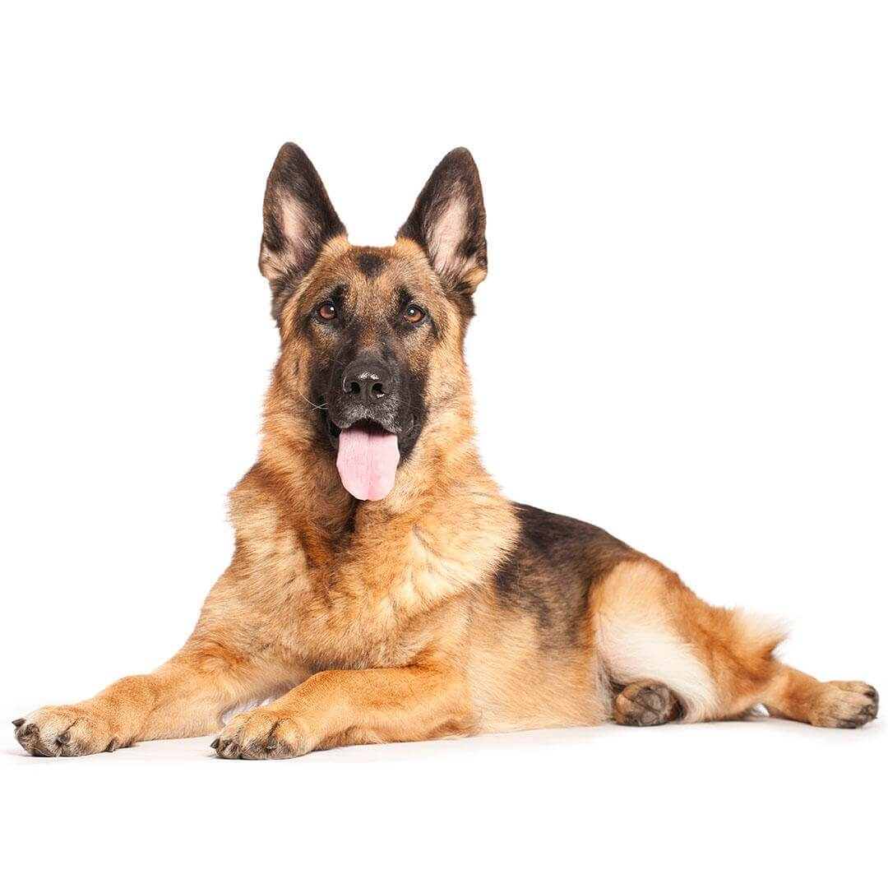

Los Pastores alemanes son una de las razas más reconocibles del mundo. Tienen un aspecto musculoso y atento y una actitud noble y distante. Son perros ágiles y bien equilibrados de porte orgulloso. Su pelaje puede presentar varios colores (consulta el estándar de la raza) y están formados por un manto superior duro, áspero y lacio, y un manto inferior grueso. La altura ideal del macho adulto es de 63 cm y la de la hembra, 58 cm. El peso puede estar entre 30 y 36 kg.
El pastor alemán desarrollará un vínculo muy estrecho con su amo y querrá pasar con él o ella el mayor tiempo posible. Aunque esta raza necesita mucha atención, lo dará todo con su lealtad y su actitud de guardián fiel e incorruptible. Por otra parte, si no dedicas tiempo a socializarlo y a entrenarlo, el pastor alemán tendrá problemas de seguridad en sí mismo y de indisciplina. Le encanta aprender y presta mucha atención al adiestramiento; de hecho, demostrará ser un alumno aventajado durante las sesiones.
Formado a partir de diferentes perros pastores, el pastor alemán se creó originalmente para el pastoreo y su origen puede rastrearse hasta el siglo VII. El pastor alemán se exhibió por primera vez en 1882 y en 1899 se formó el Verein fur Deutsche Schaferhunde, el club alemán especializado en esta raza. Fue este club el que se encargó de entrenar al pastor alemán para trabajar con la policía y las fuerzas armadas, lo que salvó a la raza de la extinción durante los tiempos difíciles de principios del siglo XX. Durante la Primera Guerra Mundial, los alemanes usaron a este perro como mensajero y también para localizar a los heridos. Los soldados aliados admiraban la inteligencia y el valor de estos perros y, al terminar la guerra, se los llevaron a casa y se estableció así la raza en otros países.
